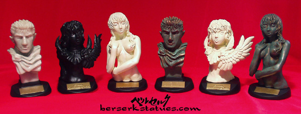

|
|
|
||||||||||||||||||||||||||||
|
|
|
||||||||||||||||||||||||||||
|
Other - Golem |
Other (last update: 2.1.11) This section is dedicated to all other miscellaneous Berserk merchandise that don't belong in the statues or kits section. I have lots of stuff I would like to upload pictures of, but my priority is to update the other two sections first. So... for now, I just have a few items here. Check 'em out!
Helmet: Femto Life Size Replica (Original Prototype)
What you see above is the THIRD addition to the LIFE SIZE replica series that James Perkins and I have worked on together. James never fails to come through with the most gorgeous Berserk replicas. Like all the helmets, this one lights up from the inside, and guarantees to spook anyone you bring home to behold this masterpiece. The creative base marking the Eclipse of Femto's birth, is truly a welcomed addition. James knows how to please us, oh so much! =) And of course, you can see TONS of pictures and details are in this dedicated thread on skullknight.net. Checkity check! If any of you are interested to own one yourself, EMAIL ME!!! I will put you in contact with James. This helmet is a very limited run, and there will be NO RE-ISSUES, so if you want one, decide now! You can also read all the details and terms in the thread posted above.
Helmet: Skullknight Life Size Replica (Original Prototype)
What you see above is the SECOND addition to the LIFE SIZE replica series that James Perkins and I have worked on together. It is quite honestly, one of the most amazing Berserk collectibles in existence and I am so happy to be a part of it. Seriously, James did a PHENOMENAL job sculpting, designing, and painting this bad ass mutha beeper. Much thanks to Aazealh for his advice and contribution to the design of the bust as well. An enormous amount of time went into this, and you can see TONS of pictures and details are in this dedicated thread on skullknight.net. Checkity check! If any of you are interested to own one yourself, EMAIL ME!!! I will put you in contact with James. This helmet is a very limited run, and there will be NO RE-ISSUES, so if you want one, decide now! You can also read all the details and terms in the thread posted above.
Helmet: Guts Life Size Replica (Original Prototype)
THIS IS MY LOVE CHILD. What you see above is a custom sculpted, LIFE SIZE replica of Guts' helmet!!! I commissioned this project to multi-talented sculptor and painter, James Perkins who did just a PHENOMENAL job. A lot of blood, sweat, and tears went into this helmet, and all the juicy details are here, in a dedicated thread on skullknight.net. Please check out that link to see all the in-progress shots and details! If any of you are interested to own one yourself, EMAIL ME!!! I will put you in contact with James. This helmet is a very limited run, and there will be NO RE-ISSUES, so if you want one, decide now! You can also read all the details and terms in the thread posted above.
Guts (Original Prototype) &
Custom Zoddo Plush Toys
For those that don't know, I currently work at Media Blasters, the American company that licensed the Berserk anime in the States. One of my colleagues, Anna Yamamoto, is the very one who designed the Guts and Griffith plush toys that were released in stores! What you see up above is the retail version of Guts, the original prototype of Guts, and a custom Zoddo plush that she made and gave to me on my birthday!!! She made me giddier than a 13 year old boy going through puberty! (Click here or the picture above to see a ton more pictures, some which are very much NSFW!!!)
Behelit: Music Box
I heard about this item several years ago, but was never sure if it really existed. After many years, I finally caught one on an online auction and won the sucker! Contrary to popular belief, this behelit music box doesn't play the song "Behelit" from the Japanese anime, but instead plays a riff from Susumu Hirasawa's "Forces". If you want to see a short video clip of it in action, click HERE (to download: right-click and "save target as"). It's an enchanting melody, and I just love the tonal quality of music boxes. They all sound so innocent and magical. Yeup, I'm a sucker for music boxes, what can I say? =P
Behelit: "Young Animal"
Exclusives
A bit disturbing huh? Those eyes... errr eye... it sorta just stares right at you, like it's about to devour you or something... WELL TRY HOLDING ONE IN THE PALM OF YOUR HAND! My Gawd, seriously, when I first held that thing, I got pretty spooked out. I mean after all, it IS the key to summon 5 demonic creatures that will send out giant monsters to rape all the ones you love, so yah, it's a bit frightening.
Busts: "Young Animal"
Exclusives 
Not the best sculpts by AOW, but nevertheless, these busts add a nice variety to any collection. It's true, the faces of Griffith and Casca are a bit unsettling, but the Guts face is pretty good (better than some of the 1/10 statues, in my opinion). The bronze/rust coloring on Guts and Casca, and the marble coloring on the other Guts are definitely my favorites of the six. I'm not a huge fan of the other three. But hey... for collection's sake, I have all six. =P
Guts: Plaque
This is actually a really heavy-duty collector's piece. I had a difficult time photographing it, so the pictures don't quite do the plaque justice, but it's very detailed and measures a little over 5 x 5 inches. Unfortunately, this is the only plaque that Art of War has made (though there are those "relief coins" that are attached to various exclusive statues). Otherwise, I would definitely like to see a Casca or Griffith plaque. Ooooh... or maybe a Zoddo or Skullknight plaque. Yeah, that would be kewl. =).
Gashapon Set
Considering the size of these figures, I am quite impressed with the detail. The poses of Guts and Griffith are engaging and the addition of the black bases with nameplates is a definite plus. This set also comes with a clear version of Guts, but if you look at my Zoddo Apostle Diorama, you will notice him there, custom painted and all! In regards to the set, I used to see it pop up every once in a while on Ebay in 2002, but has been long gone since. It does, however, appear on Yahoo Auctions Japan frequently and it usually ends at prices below $40.
Behelit: Apostle
The only way to get this little booger is to get the limited edition BLACK Femto action figure. Only 300 were made and I was lucky enough to to attain one of these sets a year ago. The black Femto is still sealed in the plastic, but I removed the Behelit Apostle because he was the reason why I bought this set in the first place. Thus, the Femto that you see pictured above is actually the statue version.
Golem
This action figure isn't the best golem out there, but it's a nice toy to display alongside the rest of AOW's statues. The only joints that you can move up and down are at the shoulders, so it's really not that much of an action figure. But anyways, this golem is simply a bonus item if you buy the limited edition box set of the Ishidro and Schierke action figures.
Kubrick Sets
Never thought Berserk could look so cute, eh? Especially Zoddo... he doesn't scare me, sheeyit. Hehe. Anyways, just like all other Kubrick toys, these little figures are very blocky with moveable joints and interchangeable heads. They are made of hard, durable plastic and come in 2 sets:
It's a nice set to have, but certainly not essential for all you Berserk collectors out there. If you are interested in buying them, you can find them pretty often on Yahoo Auctions Japan. I have only seen Set A on Ebay a few times.
|
||||||||||||||||||||||||||||
|
email: berserkstatues@gmail.com || aim: directdk |